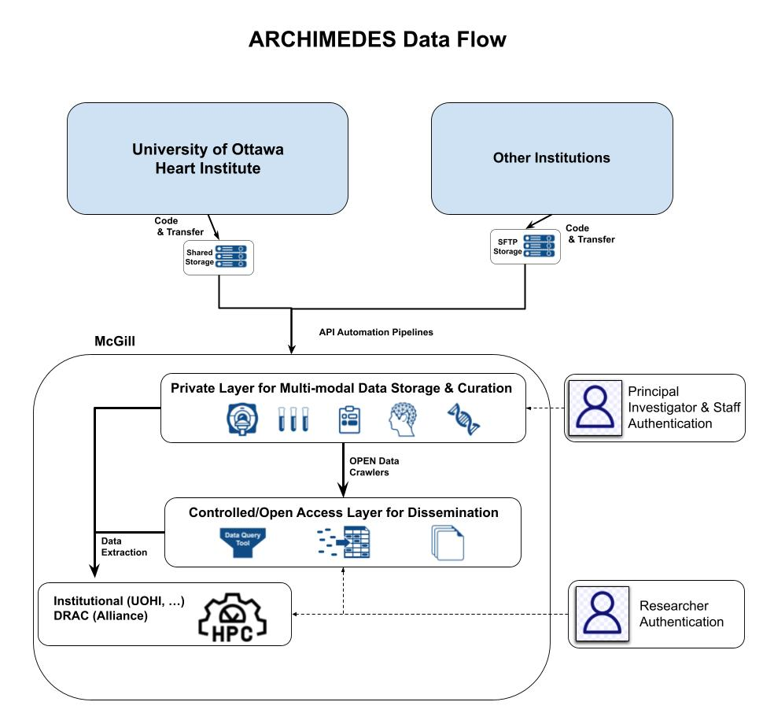

Bienvenue sur
Who is this guide for?📘
This guide is intended for users getting started with ARCHIMEDES. It provides step-by-step instructions on account creation, data access, data transfer, data release, and how to search and analyze data within the platform.
For more information, refer to the FAQ or Data Governance Framework
What is ARCHIMEDES? 
ARCHIMEDES (Advanced Research Collaboration for Health Integration, MEDical Exploration, and data Synthesis) is a platform that enables researchers to store, manage, share, and access highly structured health-related research data. It also provides a High-Performance Computing (HPC) environment, through which users can analyze ARCHIMEDES data.
All data available on ARCHIMEDES are coded and/or de-identified prior to upload to ensure privacy and compliance.
Why use ARCHIMEDES? 🤝
Health research is often slowed down by fragmented data sources, complex infrastructure, and limited access to high-quality datasets.
➡️ ARCHIMEDES brings everything together in one secure platform—data, governance, and analysis tools—so researchers can work more efficiently and collaboratively.
➡️ This integrated environment reduces the time and effort spent on data management and technical setup, allowing researchers to focus on analysis and discovery.
Within ARCHIMEDES, you can:
🧬 Access curated, multi-modal health datasets in one place
⚙️ Analyze data securely within an integrated HPC environment
🔐 Reduce technical and administrative barriers to research
🤝 Improve reproducibility and collaboration across teams
By simplifying how health data is accessed and used, ARCHIMEDES enables you to focus on advancing research and generating meaningful impact on health.
🧭 Our vision is to transform the Canadian health data landscape by building a bilingual national platform for the curation and reuse of health-related research data. ARCHIMEDES provides secure and flexible access to health data, enabling collaboration and innovation at a national scale.
What types of data are hosted? 🧬
ARCHIMEDES hosts curated, multi-modal health research, wearable, omics data (genomics, proteomics, transcriptomics, metabolomics, etc.) and summary biospecimen data. This includes both data from human research participants and non-human research data (i.e., pre-clinical data).
How can you access data? 🔐
ARCHIMEDES uses a flexible access system that allows data contributors to decide how their datasets are shared and accessed. Data on ARCHIMEDES is presently shared through two tiers:
1. Controlled Access 🔒
➡️ Data are exclusively made available to Principal Investigators (PIs) and their Research Team, for an approved research purpose. Applicants must first obtain approval from the ARCHIMEDES Data Access Committee (DAC) and enter into a Data Access Agreement (DAA).
ℹ️: DARs can only be submitted by Principal Investigators (PI)
2. Open Access 🔓
➡️ Data are made openly available to anyone through ARCHIMEDES, on a public website. In this first phase of ARCHIMEDES, only pre-clinical (i.e., non-human) data are available via Open Access.
A third tier, Registered Data Access, will be available for ARCHIMEDES users in the next phase of the platform’s development.
How does ARCHIMEDES work? ⚙️
ARCHIMEDES supports multiple data types that can be ingested and harmonized within the platform. Once available, data can be securely accessed and analyzed using integrated tools for processing, data analysis, and visualization.
➡️ The platform also provides a High-Performance Computing (HPC) environment, allowing users to perform analyses without requiring external infrastructure.
The schematic below illustrates the platform’s structure and capabilities.
